Vera Rubin Architecture Guide
NVIDIA technology reference and RunSun roadmap. Product performance values are vendor reference figures, not RunSun service-level guarantees. RunSun targets Q2 2027 for customer delivery, subject to confirmation.
Discuss future capacity Back to GPU CloudNVIDIA Vera Rubin
Our next-generation flagship is now open for reservations, with availability in Q2 2027. Run on B300 and GB300 NVL72 today, with a migration path to Vera Rubin when it comes online.
- Rubin GPU with HBM4
- Vera CPU
- NVLink 6
- Migration path from B300/GB300
NVIDIA Vera Rubin NVL72,
taken apart piece by piece.
Vera Rubin NVL72 is NVIDIA’s next-generation rack-scale AI supercomputer: 72 Rubin GPUs and 36 Vera CPUs wired into a single giant GPU by sixth-generation NVLink. This page walks through the hardware the way it is built — chip, tray, spine, power and cooling — using NVIDIA’s own imagery and published specifications, with ecosystem-partner hardware credited where NVIDIA publishes none of its own. Two of the platform’s six chips are networking silicon — the ConnectX-9 SuperNIC and the BlueField-4 DPU — and they get their own section below (06).
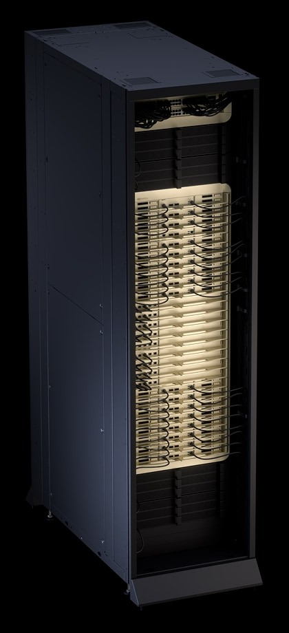
Performance figures: NVIDIA Vera Rubin NVL72 product page and NVIDIA GTC 2026 press release (March 16, 2026). NVIDIA describes its published specifications as preliminary and subject to change.
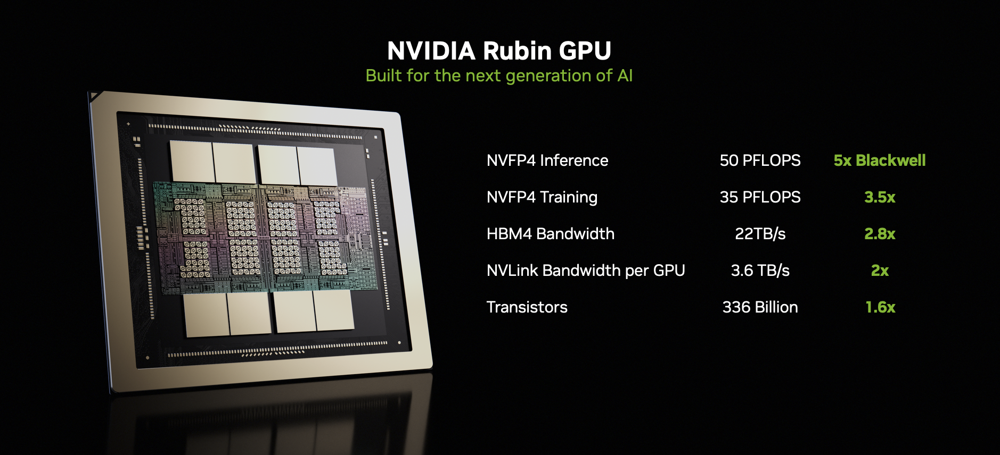
The Silicon
01The Rubin GPU
The Rubin GPU is the execution engine of the platform. Two reticle-limited compute dies are joined on a single package and flanked by HBM4 memory stacks, giving one GPU 336 billion transistors — 1.6x the transistor count of Blackwell. Its third-generation Transformer Engine is built for low-precision NVFP4 execution, the format that agentic and reasoning workloads now run on.
- 50 PFLOPS NVFP4 inference · 35 PFLOPS NVFP4 training, per GPU
- 288 GB HBM4 per GPU, at up to 22 TB/s memory bandwidth (≈2.8x Blackwell)
- 3.6 TB/s NVLink 6 bandwidth per GPU (2x the prior generation)
- Up to 5x inference and 3.5x training performance vs. Blackwell, per NVIDIA
Source: NVIDIA Technical Blog, “Inside the NVIDIA Rubin Platform” (Rubin GPU section and Figure 7).
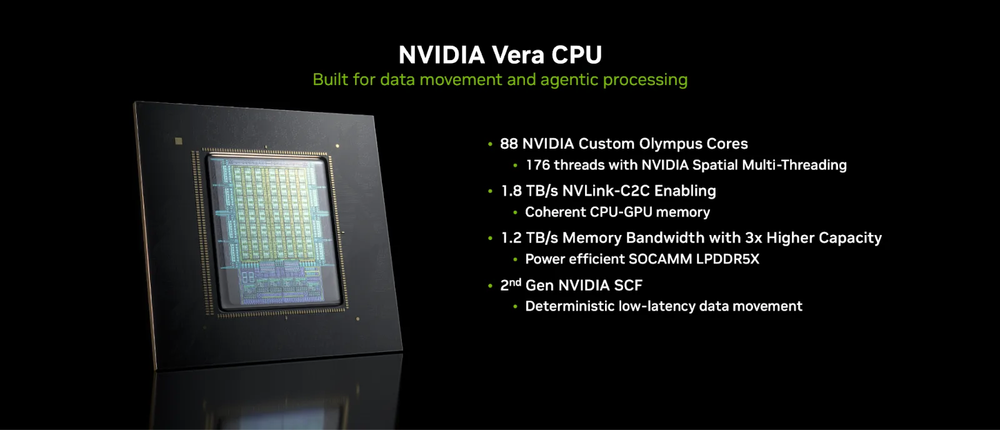
The Host Processor
02The Vera CPU
Beside every pair of Rubin GPUs sits a Vera CPU, NVIDIA’s first custom Arm-compatible host processor for AI factories. Vera is not a passive host: it is the data-movement and orchestration engine that keeps the GPUs fed, with coherent access to GPU memory over NVLink-C2C. Its system memory uses pluggable SOCAMM LPDDR5X modules, designed for fast in-field service.
- 88 Olympus cores custom NVIDIA cores, 176 threads via Spatial Multithreading
- Up to 1.5 TB LPDDR5X per superchip, at up to 1.2 TB/s
- 1.8 TB/s NVLink-C2C coherent CPU–GPU bandwidth (2x Grace)
Source: NVIDIA Technical Blog, “Inside the NVIDIA Rubin Platform” (Vera CPU section and Table 1).
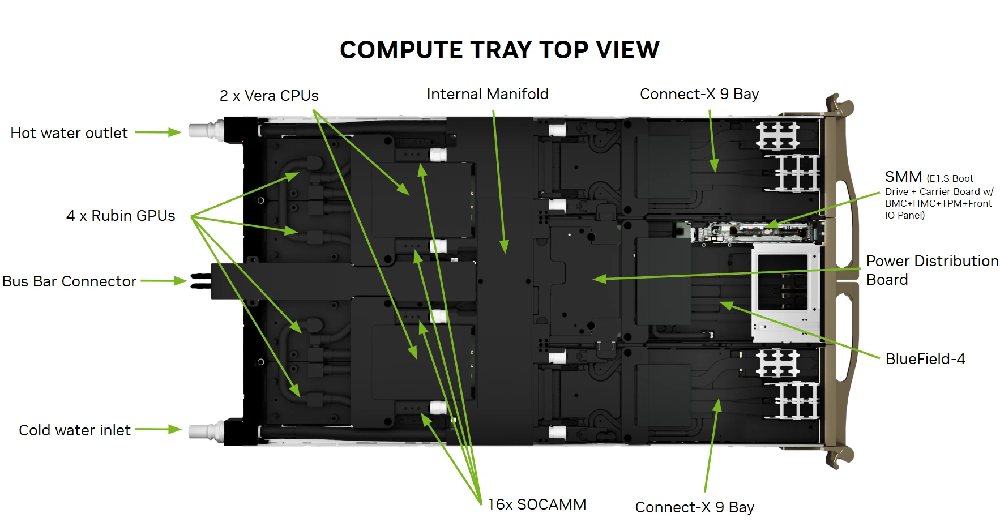
The Building Block
03The Compute Tray
Each 1U compute tray carries two Vera Rubin Superchips — two Vera CPUs and four Rubin GPUs — distributed across a printed-circuit-board midplane. Because every connection runs through the midplane, the tray itself is completely cable-free, hose-free and fanless: it slides into the rack and mates with power, cooling and the NVLink spine in one motion. The front bays hold the tray's four ConnectX-9 SuperNICs — one for each GPU — and two BlueField-4 DPUs.
- 200 PFLOPS NVFP4 AI performance per tray
- 14.4 TB/s NVLink 6 bandwidth per tray
- ≈5 minutes tray assembly time, down from nearly two hours on Grace Blackwell trays
- 100% liquid-cooled cold plates on CPUs and GPUs; no fans anywhere in the tray
Sources: NVIDIA Technical Blog (Figure 3); NVIDIA Developer Blog, “NVIDIA Vera Rubin POD” (compute tray section).
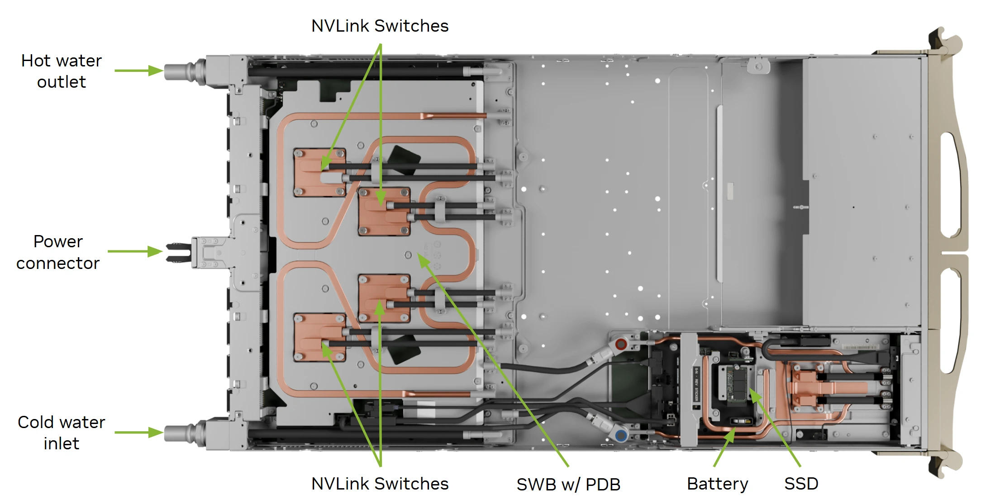
Rack Anatomy
04One Rack, Modular Layers
Pull the NVL72 apart and it separates into field-replaceable layers: 18 compute trays, 9 NVLink switch trays (each carrying four NVLink 6 switch chips, shown here), power shelves at the rack’s base and the NVLink spine at its back — roughly 1.3 million components and about 1,300 chips in a single-wide MGX rack weighing around 4,000 lbs. Every tray is modular and hot-swappable, and the rack keeps operating even while switch trays are serviced or replaced.
- 18 compute trays + 9 NVLink switch trays per rack
- ≈1.3M components in a single-wide, third-generation MGX rack
- 45°C warm-water inlet temperature for the liquid-cooling loop
Sources: NVIDIA Developer Blog, “NVIDIA Vera Rubin POD”; NVIDIA Vera Rubin NVL72 product page (inlet temperature).
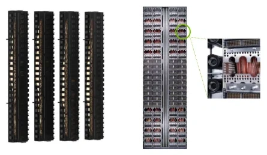
The Nervous System
05NVLink Spine & Cable Cartridges
At the back of the rack, the NVLink spine is the backplane that turns 72 GPUs into one. It is built from up to four preintegrated, prevalidated copper cable cartridges that plug every tray into a single all-to-all fabric — about 5,000 copper cables, more than two miles of cabling in total, factory-assembled into cartridges so the spine installs as a unit instead of cable by cable.
- 4 cable cartridges preintegrated and prevalidated, one modular spine
- ≈5,000 copper cables — over two miles per rack
- NVLink 6 sixth-generation scale-up fabric, 3.6 TB/s per GPU
Source: NVIDIA Developer Blog, “NVIDIA Vera Rubin POD” (MGX rack spine and NVLink sections).
Scale-Out Networking
06Beyond the Rack: ConnectX-9 & BlueField-4
NVLink 6 (section 05) is the scale-up fabric: it makes the 72 GPUs inside one rack behave as a single machine. Everything past the rack’s edge — rack to rack, pod to pod, site to site — is networking, and Vera Rubin treats it as first-class silicon, not plumbing: two of the platform’s six chips exist only to move and manage data. ConnectX-9 SuperNICs sit at every network endpoint, and two BlueField-4 DPUs in every compute tray run the infrastructure itself. Together with Spectrum-X Ethernet they form the scale-out and scale-across fabric that DGX SuperPOD deployments are built from.
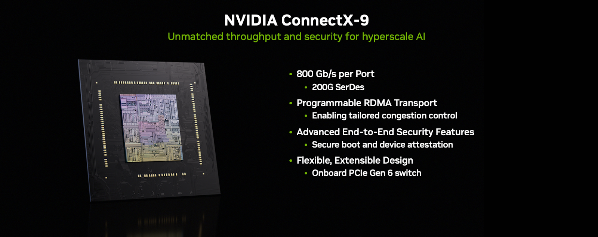
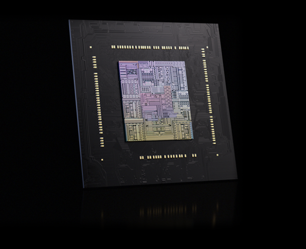
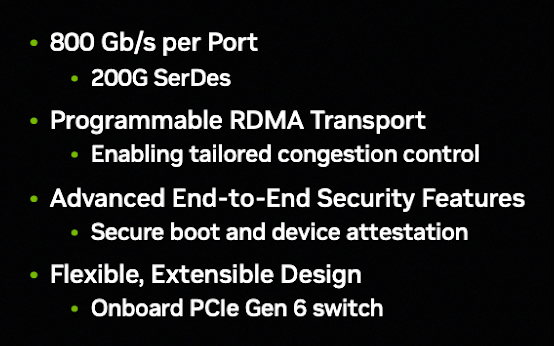
ConnectX-9 SuperNIC: The Scale-Out Endpoint
The front bays of every compute tray hold four ConnectX-9 SuperNIC boards — one board paired with each Rubin GPU — so every Rubin GPU has 1.6 Tb/s of network bandwidth leaving the rack. ConnectX-9 is the intelligent endpoint of the Spectrum-X Ethernet fabric (and pairs with Quantum-X800 InfiniBand where that fabric is chosen). AI traffic is bursty and synchronized — in MoE expert dispatch and collective operations, thousands of GPUs inject data at the same instant — so instead of reacting to congestion after queues build, ConnectX-9 enforces programmable congestion control, traffic shaping and packet scheduling at the endpoint itself, in coordination with the Spectrum-6 switches. It also enforces per-job fairness and isolation, so one tenant’s burst cannot degrade the fabric for everyone else, and its cryptographic engines accelerate encryption for data in motion and at rest without giving up line rate.
- 800 Gb/s per port over InfiniBand or Ethernet, with programmable RDMA transport
- 1.6 Tb/s per Rubin GPU of scale-out bandwidth in the NVL72 tray design
- Four ConnectX-9 SuperNICs per compute tray one paired with each Rubin GPU
- Endpoint congestion control programmable congestion control, traffic shaping and packet scheduling, coordinated with Spectrum-6 switches
- Isolation & security at the endpoint per-tenant fairness, IPsec and PSP encryption acceleration, secure boot and device attestation
Sources: NVIDIA Technical Blog, “Inside the NVIDIA Rubin Platform” (ConnectX-9 section and Figure 12; tray layout in the compute tray section); NVIDIA ConnectX-9 SuperNIC datasheet (per-port rate over InfiniBand and Ethernet).
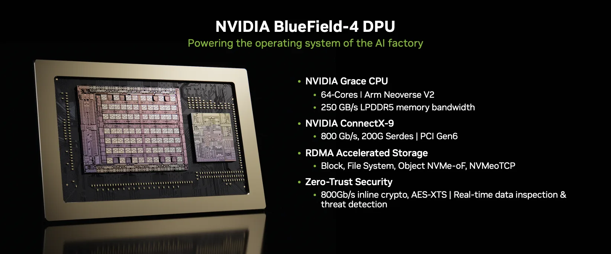
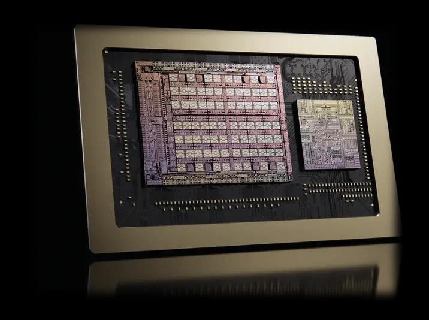
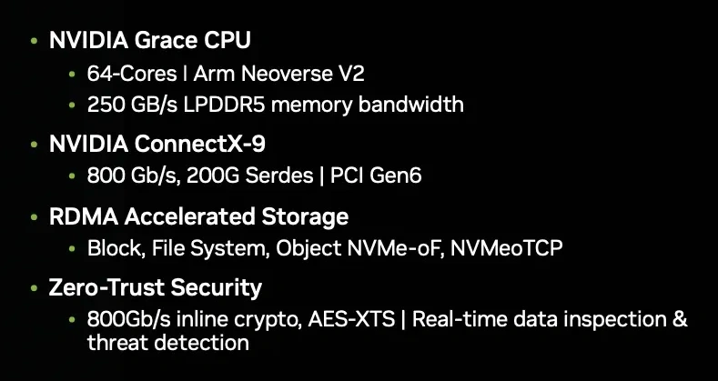
BlueField-4 DPU: The Operating System of the AI Factory
Every compute tray also carries two BlueField-4 DPUs — one paired with each Vera CPU — complete computers dedicated to infrastructure, so that networking, storage, security and telemetry never compete with the host CPUs and GPUs doing AI work. BlueField-4 is a dual-die package: a 64-core NVIDIA Grace CPU (Arm Neoverse V2) fused with an integrated ConnectX-9 networking die, running NVIDIA’s DOCA software platform and its microservices entirely off-host. That is why NVIDIA calls it the processor powering the operating system of the AI factory. Its ASTRA trust architecture establishes a trust domain inside the tray — the control point that makes secure bare-metal, multi-tenant operation possible — and the same DPU powers NVIDIA’s Inference Context Memory Storage tier, serving and pre-staging KV cache for long-context inference. Against BlueField-3, every axis moves by multiples: twice the network bandwidth, six times the compute, more than three times the memory bandwidth.
- Two BlueField-4 DPUs per compute tray — one paired with each Vera CPU
- 800 Gb/s networking via the integrated ConnectX-9 die — 2x BlueField-3’s 400 Gb/s
- 64 Grace cores (Arm Neoverse V2) — 6x the compute of BlueField-3’s 16 Arm A78 cores
- 128 GB LPDDR5X at 250 GB/s memory bandwidth (BlueField-3: 32 GB at 75 GB/s)
- 800 Gb/s inline AES-XTS cryptography with real-time data inspection and threat detection; PCIe Gen6 host interface
- 20M IOPS NVMe storage disaggregation at 4K (2x BlueField-3); cloud networking scale of 128K hosts (4x)
- Up to 5x tokens-per-second and up to 5x power efficiency for the BlueField-4-powered Inference Context Memory Storage tier vs. traditional storage, per NVIDIA
Sources: NVIDIA Technical Blog, “Inside the NVIDIA Rubin Platform” (BlueField-4 section, Figure 13, and the BlueField-3 vs. BlueField-4 comparison, Table 5); NVIDIA BlueField networking platform page (800 Gb/s infrastructure platform, six times the compute of its predecessor); NVIDIA GTC Washington, DC announcement, “NVIDIA Launches BlueField-4: The Processor Powering the Operating System of AI Factories” (Oct 27, 2025).
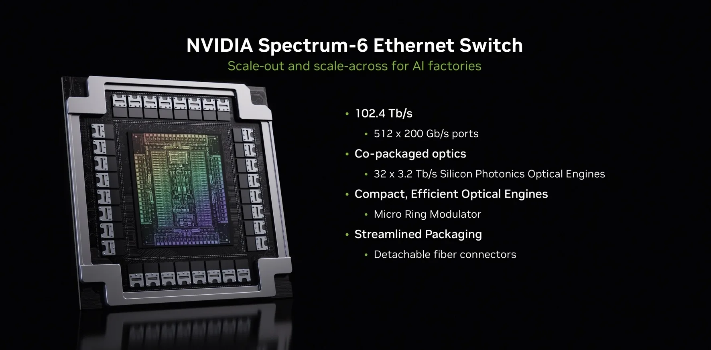
The Fabric They Plug Into: Spectrum-6 & Spectrum-X
Endpoints are only half the fabric. ConnectX-9 and BlueField-4 plug into Spectrum-X Ethernet, whose Rubin-generation switch silicon is Spectrum-6: a single switch chip delivering 102.4 Tb/s through 512 ports of 200 Gb/s Ethernet, with co-packaged optics (Spectrum-X Ethernet Photonics) that integrate the optical engines into the switch package for denser, more power-efficient fabrics. Spectrum-6 defines fabric-level behavior, ConnectX-9 enforces endpoint behavior, and BlueField-4 operates the result — the three together are what let an AI factory scale out across racks and across sites while keeping the bursty, synchronized traffic of AI workloads predictable.
- 102.4 Tb/s per Spectrum-6 switch chip — 2x the prior generation
- 512 × 200 Gb/s Ethernet ports, with co-packaged optics on Spectrum-X Ethernet Photonics switches
- Scale-out and scale-across one Spectrum-X fabric from rack clusters to geographically dispersed sites
Source: NVIDIA Technical Blog, “Inside the NVIDIA Rubin Platform” (Spectrum-6 section and Figure 14).
Power Delivery
07Liquid-Cooled Busbar
Power reaches the trays through a liquid-cooled busbar that runs the height of the rack — a solid copper rail fed by the rack’s power shelves, rated for up to 5,000 amps. Cooling the busbar itself, not just the chips, is what lets the third-generation MGX design support rack deployments of up to 250 kW. On top of the rail, Intelligent Power Smoothing uses rack-level energy storage to flatten the violent load swings of AI training, cutting peak current demand by up to 25%.
- Up to 5,000 A liquid-cooled busbar rating
- Up to 250 kW rack deployments supported by the MGX 1.2 design
- 400 J per GPU rack-level energy storage — 6x the prior generation
- Up to 25% reduction in peak current demand
Sources: NVIDIA Developer Blog, “NVIDIA Vera Rubin POD” (busbar rating, power smoothing); NVIDIA Blog, OCP Global Summit announcement, Oct 12, 2026 (MGX 1.2, 250 kW).
Thermal Management
08The Liquid-Cooling System
Vera Rubin NVL72 is 100% liquid-cooled — there are no fans in the rack, and air plays no part in removing GPU heat. The cooling chain is two loops joined at one machine: a facility loop brings warm water to a coolant distribution unit (CDU), and the CDU’s heat exchanger and pumps drive a separate, tightly controlled rack loop through manifolds and quick disconnects to cold plates on every CPU and GPU. NVIDIA designs the whole chain for 45°C warm water — hot enough that many data centers can reject heat with dry coolers alone, with no chillers, for much of the year.
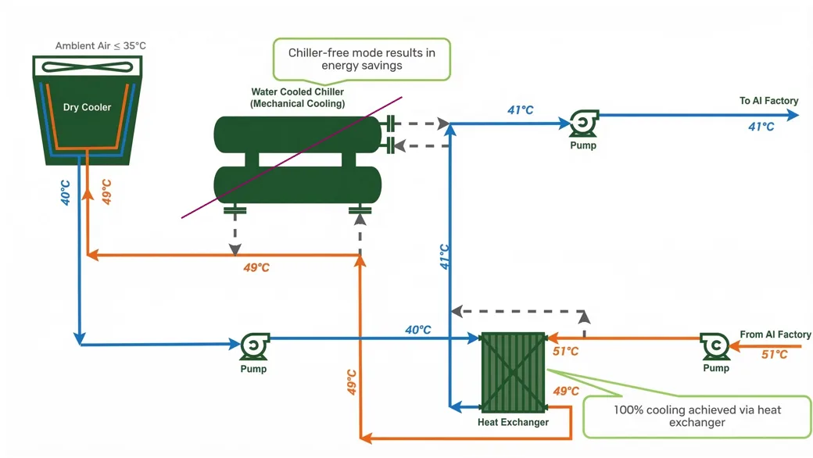
The CDU’s Place in the Loop
NVIDIA’s reference layout gives the CDU a precise job: the facility delivers water at 41°C to the CDUs, and the CDUs in turn supply coolant at 45°C to the AI racks. Sitting between the two loops, the CDU isolates the clean rack-side coolant — de-ionized water or a PG25 glycol mix, rated to last up to 10 years in a closed loop — from whatever the building’s water plant provides, while its pumps set the flow and pressure the racks actually see.
- 41°C facility water delivered to the CDUs; 45°C coolant supplied to the racks
- Up to 30% more GPUs in the same power budget with 45°C liquid cooling
- DI water or PG25 rack-loop coolant, up to 10 years of service life in a closed loop
- 100% liquid-cooled racks, on the same facility cooling infrastructure as prior generations
Source: NVIDIA Developer Blog, “NVIDIA Vera Rubin POD” (cooling layout, Figure 5, and MGX cooling sections).
The CDU Itself
Physically, a CDU is a row-level cabinet — heat exchanger, pumps, filtration and controls in a rack-sized enclosure that stands in the row alongside the compute racks it feeds. NVIDIA does not sell a CDU of its own; the units are built by MGX-ecosystem partners to the platform’s envelope and sized to the hall — in-row units cool several racks at once with redundant, hot-swappable pumps for zero-downtime service, and liquid-to-air sidecar CDUs cover halls with no facility water.
- Row-level cabinet — heat exchanger, pumps, filtration and controls in a rack-sized enclosure
- Redundant, hot-swappable pumps for zero-downtime service
- Liquid-to-air sidecar options for halls with no facility water
Source: NVIDIA Developer Blog, “NVIDIA Vera Rubin POD” (cooling and MGX ecosystem sections).
Cold Plates — Direct-to-Chip Liquid Cooling
Liquid coolant is distributed through the rack manifold and compute-tray internal manifolds to cold plates attached directly to the CPUs, GPUs, and selected networking and storage components. Heat is transferred directly into the liquid cooling loop, eliminating the need for air cooling of the primary compute components.
- 72 Rubin GPUs + 36 Vera CPUs per NVL72 rack
- Direct-to-chip liquid cooling across compute trays
- Cold plates for CPUs, GPUs and selected networking/storage components
Source: NVIDIA Vera Rubin NVL72 product page (nvidia.com).
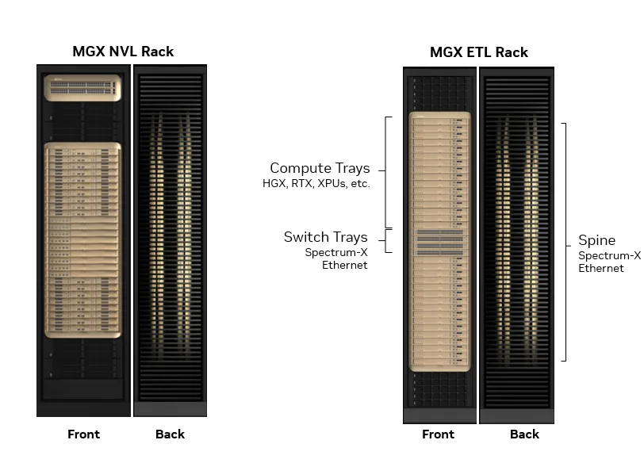
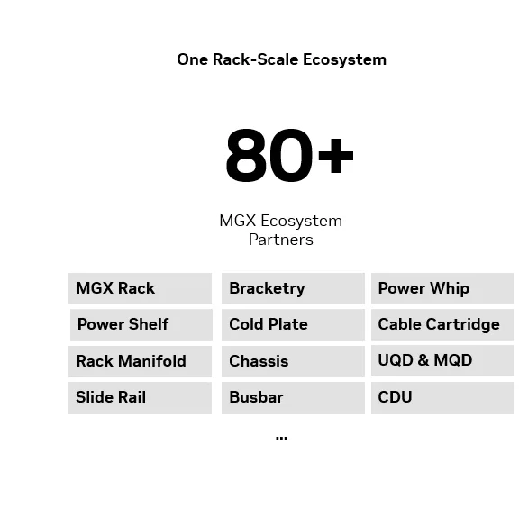
Manifolds, Quick Disconnects & Leak Containment
Inside the rack, the coolant plumbing is hose-free. A redesigned internal manifold in each compute tray and the rack’s UQD08 manifold distribute flow to every tray, and universal quick disconnects make the fluid connection as the tray slides home — the blind-mate design is what lets a tray be pulled and replaced without draining the loop. Under the fluid path, the MGX component set standardizes leak containment trays. Leak detection is likewise part of the NVL72 reference pattern — partner reference designs specify rack leak-detection modules and leak trays per NVIDIA’s leak-detection strategy — although NVIDIA has not yet published a Vera Rubin-specific sensor layout.
- Internal tray manifolds + rack UQD08 manifolds new in the third-generation MGX rack
- Redesigned manifold + universal quick disconnects support significantly higher flow rates than prior generations
- Leak containment trays standardized in the MGX ecosystem component set
- Rack leak-detection module & leak tray specified per NVIDIA’s leak-detection strategy (per prior-generation partner documentation for GB300 NVL72)
Sources: NVIDIA Developer Blog, “NVIDIA Vera Rubin POD”; NVIDIA Technical Blog, “Inside the NVIDIA Rubin Platform” (compute tray section).
Product images © NVIDIA Corporation, reproduced from NVIDIA’s official website (nvidia.com), NVIDIA Technical Blog and NVIDIA Developer Blog, as credited under each image. Performance figures are NVIDIA’s published specifications; NVIDIA notes that specifications are preliminary and subject to change. RunSun reservation terms for Vera Rubin capacity are available on request — no list price is published for Vera Rubin.
Vera Rubin, head to head with B300, GB300, H200 and H100
Vera Rubin leads the line-up. Here is how the Rubin generation compares with the Blackwell platforms available today and the Hopper generation.
| NVIDIA Vera Rubin NVL72 | NVIDIA B300 | NVIDIA GB300 NVL72 | NVIDIA H200 | NVIDIA H100 | |
|---|---|---|---|---|---|
| Form factor | Rack-scale system, 72 GPUs | 8-GPU HGX node | Rack-scale system, 72 GPUs | SXM GPU | SXM GPU |
| GPU memory | 288 GB HBM4 per GPU (20.7 TB per rack) | 288 GB HBM3e per GPU | 288 GB HBM3e per GPU (20 TB per rack) | 141 GB HBM3e | 80 GB HBM3 |
| Memory bandwidth | 22 TB/s per GPU | 8 TB/s per GPU | 8 TB/s per GPU | 4.8 TB/s | 3.35 TB/s |
| NVLink | NVLink 6 — 3.6 TB/s per GPU | NVLink 5 — 1.8 TB/s per GPU | NVLink 5 — 130 TB/s per rack | NVLink — 900 GB/s | NVLink — 900 GB/s |
| AI compute | 50 PFLOPS NVFP4 inference per GPU | 15 PFLOPS NVFP4 (dense) per GPU | ~1.1 EFLOPS FP4 per rack | 3,958 TFLOPS FP8 (sparse) | 3,958 TFLOPS FP8 (sparse) |
| At RunSun | Reservations open — available in Q2 2027 | Available now | Available now | Available now | Available now |
Figures are NVIDIA's published specifications: Vera Rubin per the NVIDIA Technical Blog and Developer Blog and the Vera Rubin NVL72 product page; B300 and GB300 NVL72 per NVIDIA's Blackwell Ultra platform specifications; H200 and H100 per NVIDIA's official GPU specification tables. Each generation's headline low-precision format is shown (NVFP4 on Rubin and Blackwell, FP8 on Hopper), so compute figures are indicative across generations rather than directly interchangeable. NVIDIA describes Vera Rubin specifications as preliminary and subject to change.